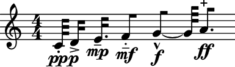
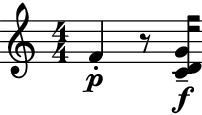
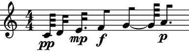
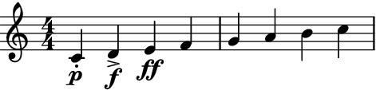
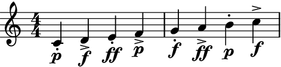

LeafDynMaker
- class auxjad.LeafDynMaker[source]
Creates leaves and logical ties from
list’s of pitches, durations, dynamics, and articulations. It is an extension ofabjad.LeafMakerwhich can take optionallist’s of dynamics and articulations.- Basic usage:
Usage is similar to
abjad.LeafMaker:>>> pitches = [0, 2, 4, 5, 7, 9] >>> durations = [(1, 32), (2, 32), (3, 32), (4, 32), (5, 32), (6, 32)] >>> dynamics = ['pp', 'p', 'mp', 'mf', 'f', 'ff'] >>> articulations = ['.', '>', '-', '_', '^', '+'] >>> maker = auxjad.LeafDynMaker() >>> notes = maker(pitches, durations, dynamics, articulations) >>> staff = abjad.Staff(notes) >>> abjad.show(staff)
 pitches:Tuple elements in
pitchesresult in chords. None-valued elements inpitchesresult in rests:>>> pitches = [5, None, (0, 2, 7)] >>> durations = [(1, 4), (1, 8), (1, 16)] >>> dynamics = ['p', None, 'f'] >>> articulations = ['staccato', None, 'tenuto'] >>> maker = auxjad.LeafDynMaker() >>> notes = maker(pitches, durations, dynamics, articulations) >>> staff = abjad.Staff(notes) >>> abjad.show(staff)
 omit_repeated_dynamics:Can omit repeated dynamics with the keyword argument
omit_repeated_dynamics:>>> pitches = [0, 2, 4, 5, 7, 9] >>> durations = [(1, 32), (2, 32), (3, 32), (4, 32), (5, 32), (6, 32)] >>> dynamics = ['pp', 'pp', 'mp', 'f', 'f', 'p'] >>> maker = auxjad.LeafDynMaker() >>> notes = maker(pitches, ... durations, ... dynamics, ... omit_repeated_dynamics=True, ... ) >>> staff = abjad.Staff(notes) >>> abjad.show(staff)
 dynamicsandarticulations:The lengths
dynamicsandarticulationscan be shorter than the lengths ofpitchesanddurations(whatever is the greatest):>>> pitches = [0, 2, 4, 5, 7, 9, 11, 12] >>> durations = (1, 4) >>> dynamics = ['p', 'f', 'ff'] >>> articulations = ['.', '>'] >>> maker = auxjad.LeafDynMaker() >>> notes = maker(pitches, durations, dynamics, articulations) >>> staff = abjad.Staff(notes) >>> abjad.show(staff)
 cyclic_dynamicsandcyclic_articulations:If the lengths of either
dynamicsandarticulationsare shorter than the lengths ofpitchesanddurations(whatever is the greatest), use the optional keyword argumentscyclic_dynamicsandcyclic_articulationsto apply those parameters cyclically:>>> pitches = [0, 2, 4, 5, 7, 9, 11, 12] >>> durations = (1, 4) >>> dynamics = ['p', 'f', 'ff'] >>> articulations = ['.', '>'] >>> maker = auxjad.LeafDynMaker() >>> notes = maker(pitches, ... durations, ... dynamics, ... articulations, ... cyclic_dynamics=True, ... cyclic_articulations=True, ... ) >>> staff = abjad.Staff(notes) >>> abjad.show(staff)
 articulationsanddynamicsof length1:If the length of
articulationsordynamicsis1, they will be applied only to the first element.>>> pitches = [0, 2, 4, 5, 7, 9, 11, 12] >>> durations = (1, 4) >>> dynamics = 'p' >>> articulations = '.' >>> maker = auxjad.LeafDynMaker() >>> notes = maker(pitches, durations, dynamics, articulations) >>> staff = abjad.Staff(notes) >>> abjad.show(staff)
cyclic_dynamicsandcyclic_articulationsof length1:To apply them to all elements, use the
cyclic_dynamicsandcyclic_articulationsoptioanl keywords.>>> pitches = [0, 2, 4, 5, 7, 9, 11, 12] >>> durations = (1, 4) >>> dynamics = 'p' >>> articulations = '.' >>> maker = auxjad.LeafDynMaker() >>> notes = maker(pitches, ... durations, ... dynamics, ... articulations, ... cyclic_articulations=True, ... ) >>> staff = abjad.Staff(notes) >>> abjad.show(staff)
- Accepted types:
Similarly to Abjad’s native classes, it accepts many types of elements in its input
list’s:>>> pitches = [0, ... "d'", ... 'E4', ... abjad.NumberedPitch(5), ... abjad.NamedPitch("g'"), ... abjad.NamedPitch('A4'), ... ] >>> durations = [(1, 32), ... '2/32', ... abjad.Duration('3/32'), ... abjad.Duration(0.125), ... abjad.Duration(5, 32), ... abjad.Duration(6 / 32), ... ] >>> dynamics = ['p', ... abjad.Dynamic('f'), ... ] >>> articulations = ['>', ... abjad.Articulation('-'), ... abjad.Articulation('.'), ... ] >>> maker = auxjad.LeafDynMaker() >>> notes = maker(pitches, durations, dynamics, articulations) >>> staff = abjad.Staff(notes) >>> abjad.show(staff)
Methods
__call__(pitches, durations[, dynamics, ...])Calls the leaf-maker on
pitches,durations,dynamics, andarticulations, returning anabjad.Selection.__init__()__repr__()Return repr(self).
Attributes
Gets forbidden written duration.
Gets forbidden written duration.
Is true when durations increase monotonically.
Is true when skips appear in place of rests.
Gets tag.
Is true when rests are multimeasure.
- __call__(pitches, durations, dynamics=None, articulations=None, *, omit_repeated_dynamics: bool = False, cyclic_dynamics: bool = False, cyclic_articulations: bool = False) Selection[source]
Calls the leaf-maker on
pitches,durations,dynamics, andarticulations, returning anabjad.Selection.
- property tag: Tag | None
Gets tag.
Integer and string elements in
pitchesresult in notes:>>> maker = abjad.LeafMaker(tag=abjad.Tag("leaf_maker")) >>> pitches = [2, 4, 'F#5', 'G#5'] >>> duration = abjad.Duration(1, 4) >>> leaves = maker(pitches, duration) >>> staff = abjad.Staff(leaves) >>> abjad.show(staff)